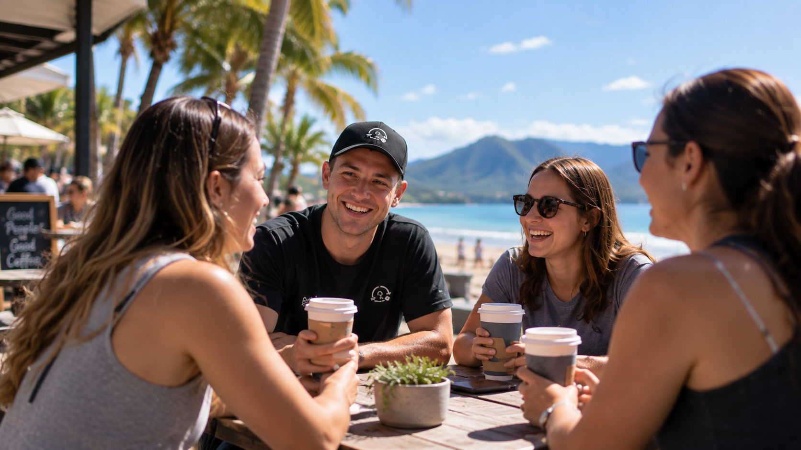

NDIS Support
Your NDIS plan. Support built around you.
Already have an NDIS plan? Pure Coaching makes it simple to get started with personalised support built around your goals, interests and everyday life.
NDIS-funded support Cairns & FNQ
NDIS Support Areas
Support for different parts of everyday life.
Depending on your plan, goals and available funding, Pure Coaching can provide support across different areas of everyday life, independence and community participation.

Community Participation

Transport

Finding and Keeping a Job

Support Coordination
Your journey with Pure Coaching
From NDIS plan to real support.
Getting started doesn't need to feel complicated. We'll guide you through the process, get to know what matters to you and help set up support around your goals.
-
1
Step 1
Get in touch
Contact Pure Coaching directly, or have your family, Support Coordinator, Case Manager or another professional contact us on your behalf.
-
2
Step 2
Tell us about you
We'll learn about your goals, interests, support needs and what you'd like to work towards.
-
3
Step 3
Set up your support
We'll organise your enrolment, discuss availability and set up your support around your needs and NDIS plan.
-
4
Step 4
Start with Pure Coaching
Meet your support worker and begin personalised support built around your goals and everyday life.
Support Coordination
Have an NDIS plan but not sure what to do next?
We can help you understand your plan, connect with the right providers and services, and coordinate your supports with greater confidence.
Pure Coaching offers Support Coordination for people who want help making sense of their NDIS plan and taking the next steps.
Talk to Us About Support Coordination →Ready to get started?
Start with Pure Coaching.
Choose the option that best matches your situation and we'll guide you through the next steps.
For participants & families
I'm looking for support
For participants or families wanting to start support with Pure Coaching.
Start Enrolment →For professionals
I'm referring someone
For Support Coordinators, Case Managers and other professionals referring a participant to Pure Coaching.
Make a Referral →